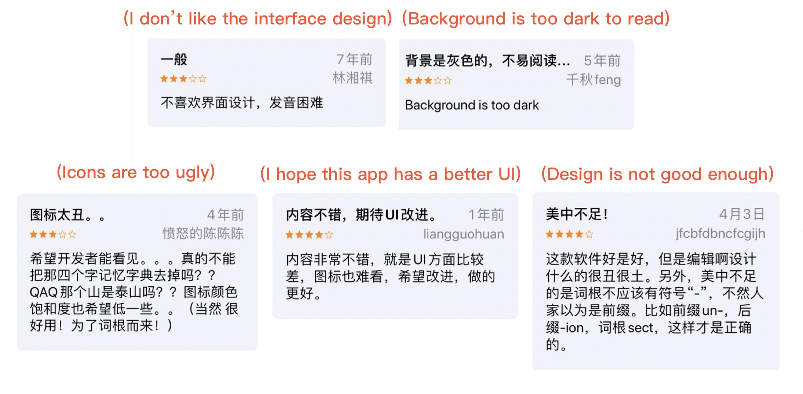
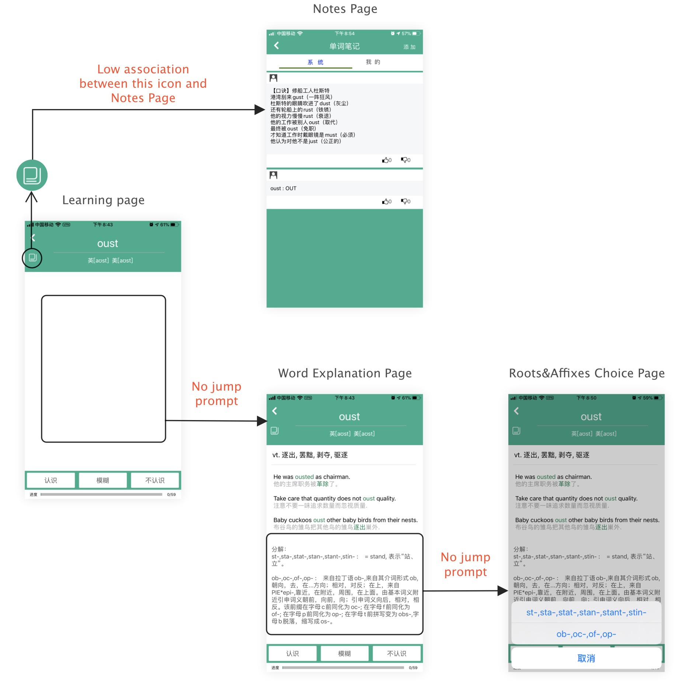
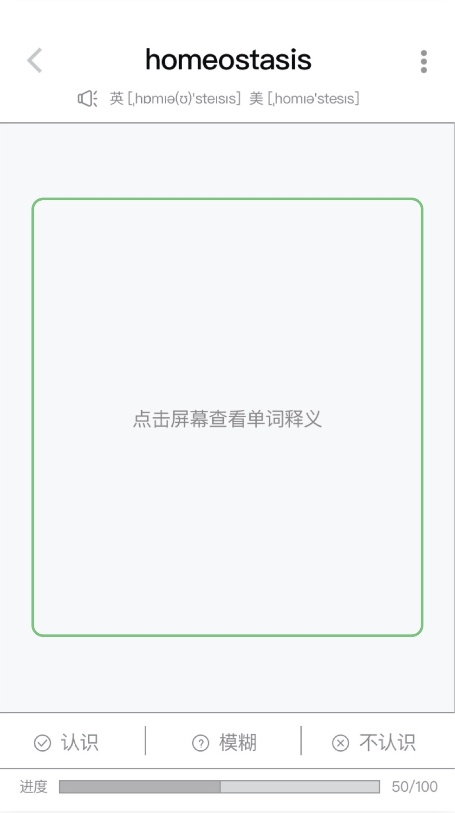

----This page contains many images, please wait a few seconds for loading----
Introduction
Dictionary of Root and Affixes
- This App is developed by individual developer Weidong Gao. It aims to help English learners quickly understand, memorize or search English words by illustrating then analyzing roots and affixes of words
- In App Store, this App has a very high rating (4.9/5.0), and the number of reviews has exceeded 12k, which means it has a wide user base (Click here to see this App in App Store)

The original motivation for optimization
- Despite providing good way to learn vocabulary, this app does not come with a good user experience. The interfaces of this app sometimes make users lost in navigation, commented in multiple reviews in App Store;
- Amongst all kinds of English Learning apps that I’ve tested and assessed as a intern UX designer, the method used by this app is the most effective one for me. Interfaces should not be a hindrance for the promote of this app;
- Hoping to contribute to the optimization of the app, I contacted the developer Mr. Weidong Gao and told him I wanted to provide a optimization plan for this App. He was pleased and then our synergistic cooperation started.
Optimization principle
- Considering the heavy workload of individual developer, this plan tries to change the main functions or interaction at a minimal level.
How to optimize

- Combine personal use experience, feedback from users that I interviewed, and previous App Store reviews to find goal and direction of this optimization;
- Analyze functions framework of this app, from the whole app to a single interface;
- Design low-fidelity prototypes, communicate with developer, and modify them;
- Take other English learning Apps as reference to improve interface design.
Goal & Direction
App Store previous reviews
Users' feedback
I did a simple interview with my three friends (Yang, Chen and Huang) who used this app. Here are some records of this interview;
- Q1: Could you guys please tell me about your experience using dictionary of roots and affixes?
Huang: Well, it's really convenient and effective to search or learn words by roots and affixes. This is best characteristic of App. I like it. I don't mind interfaces at all. It works and it's not made by a professional group. So I think the design is ok.
Chen: It's great, but the interaction are really bad and ugly...
Yang: This app is good. It would have been better if it has more beautiful interfaces, I think.
- Q2: Could you please tell me about the frequency of you use this App to read or practice?
Huang: Oh yes, such as LECI, MoMo. I use them mainly for standardized test.
Chen: XZ TOEFL, haha. The dictionary of roots and affixes App doesn't have enough learning resources. Now I basically don't use it.
Yang: XZ.
- Q2: Is there any other English Learning Apps you guys usually use?
Huang: Oh yes, such as LeCi, MuoMuo. I use them mainly for examination.
Chen: Xiaozhan Toefl, haha. The dictionary of roots and affixes App doesn't have enough learning resources. Now I basically don't use it.
Yang: Xiaozhan.
Summary
- Interfaces should have a better, more appealing look for the dull process of vocab learning;
- Functions framework needs to be modified;
- The framework of function should be a prevailing consideration when designing the interface. Analyzing functions framework should be the first step. Then design low-fidelity prototypes. Finally, re-design the interfaces.
Functions Framework
Analysis
Pros
- The functions of this APP are comprehensive and can basically meet the need users. This also can be seen from the App Store reviews.
Cons
- In "personal info" section, there are reading materials on grammars etc. Besides, there is reading functions in "Settings" section. Obviously, they are not suitable for the part;
- Both "Search Words" and "Roots & Affixes” provide search function and they have similar interface, which is confusing for users. But we can see they are separated.
Summary
- The "Settings" section has more than 10 modules, while other sections just have much less functions. The distribution of functions is unbalanced;
- The classification of functions is not suitable. It would be difficult for users to find some functions.
Optimization Plan
- Integrate "Search Words" and "Roots & Affixes";
- Create a new section ("Learning Materials") for learning and reading functions.

Before

After
Low-fidelity Prototypes
In my new low-fidelity prototype designs, I tried to address to 3 major problems in the previous scheme, where
- The functions framework were not correctly reflected in the navigation hierarchy;
- Focus were not highlighted enough;
- Icons were occasionally inconsistent and misleading, unintentionally increasing time cost of users.
Here are 3 most frequently used and most modified interfaces. They would be used as cases to display my optimization plan
- Case1 Learn words - Home Page
Analysis
Interface
Framework

- There are two central points in the interface, including "Learning progress-total 7268, learned 4" and "button-start". However, for this page, "Learning progress" is not the first important function
- Other products in the market prefer to divide "learn new words" function and "review old words" function into two parts. Users will have more freedom to decide whether to learn new words firstly or to review firstly
- "Set number of learning words", "Roots & Affixes", "Sequence" and "Random" are used to set learning model by users
- "Classification of roots & affixes", "High Frequency roots", and "250 roots" actually are different classification methods for roots and affixes and thus overlapping. And these functions would not use frequently.
- "Word list" actually shows the already learned words and new words, it is similar to "learning progress"
Optimization
- Integrate similar functions and re-design the canvas, converge focus onto different functions;
- According to re-designed functions framework, draw the low-fidelity prototype.
Framework

Interface
- Case 2 Learn words - Learning Page and Word Explanation Page
Analysis
- In order to jump from "Learning Page" to "Word Explanation Page", users can click on the blank space or the three function buttons below. However, there is no prompt to tell the user they could do that.
- Click on the "roots or affixes" part would show "Roots & Affixes Choice Page", but there is no significant difference between the "roots or affixes" part and other parts.
- Users could see more information about the word by clicking on it. But there is no prompt to guide users to do so
- The information transmission efficiency of "Note" icon is extremely low. And it is not suitable to put the notes icon at "Learning page"
Optimization
- Add suitable prompt information on the interface
- Re-plan the visual focus of the different functions on this interface
Learning Page
- Add "Click on the screen to see the word definition" message to the blank space
Before
After
Word Explanation Page
- Use different font and color for roots and affixes in order to guide users to pay attention and try to click on it;
- Use some area of the page for "Notes". Users can view most popular or their own notes and add new notes directly through this page;
- Add a message and button at the bottom of this page to tell users they could see more information on this word by clicking on this small button.
Before

After

*Personal Suggestion
- It may be better to click on the "root and affix" to directly jump to the "root and affix details page". It could minus the operation steps, and the operating hot zone would not be too small or inconvenient.
Before

After
Low-fidelity prototypes - "Learning Words" Flow Chart

- Case3 Learning Materials (new section)
Analysis
Framework
Optimization
- Integrate these functions into the "Learning Materials" section
- Classify these functions into "Words", "Grammar", "Examination Practice" and "Reading"
- Use tab for switching sections
Developer's Feedback
I sent my optimization plan to Mr. Weidong Gao and he gave some feedback. He agreed to create a new section for learning and reading, while he did not think that integrating "Search Words" and "Roots & Affixes" was a good idea. And there were more statistics for searching words, this function should be put in homepage.
We are still discussing the change of "Search" section. So, at this stage, I and Mr. Weidong Gao decide to optimize other sections interfaces firstly.

Interface Optimization (iOS)
Color Scheme
- The original version just has green, white, black and grey. And the green is not active enough. Considering when learning English, users would like to be encouraged or feel pleased. A more active green and some orange would be better
Main Color

Auxiliary Color
Learn words-Home age
Original Version
Low-fidelity Prototype
- Version 1
The difference between "Learn" and "Review" is not distinct. Additionally, this page has too much green. It would cause visual fatigue.
- Version 2
The green for "Learn" is too dark, not active. It would be better to use brilliant color. (After all, learning sometimes could be boring and painful)
- Version 3
Choose orange to make the page more colorful and active! Orange color is auxiliary color and would not make the page look strange.